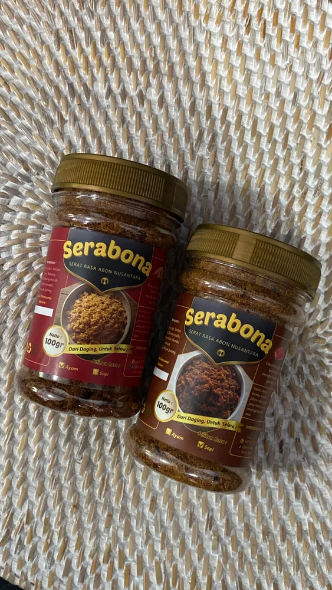

Diolah dari daging sapi segar tanpa gajih berlebih. Warna cokelat keemasan alami dari karamelisasi gula kelapa dan rempah asli tanpa pewarna buatan.
Serabona - Abon Sapi Kacang Rempah 100gr
Rp 24.000 / toples jar (100g)
Gurihnya daging sapi pilihan dengan bumbu rempah yang meresap sampai ke serat terdalam! Dipadukan dengan renyahnya kacang tanah sangrai pilihan untuk tekstur yang kaya dan memanjakan lidah di setiap gigitan.
Artha
PIC Pemesanan & Layanan Pelanggan Serabona
WhatsApp: +62 813-3363-3565 • Jam Layanan: 08.00 - 17.00 WIB
Instagram: @bon_boniga
Keunggulan Serabona Abon Sapi
- Daging Sapi Segar Pilihan: Serat daging sapi panjang, halus, dan terasa nyata keasliannya tanpa gajih/lemak liat.
- Rempah Nusantara Autentik: Diracik dengan resep bumbu khas tradisional (bawang merah Brebes, bawang putih, ketumbar sangrai, serai, daun jeruk).
- Paduan Kacang Sangrai: Menghadirkan tekstur berlapis yang renyah dan tidak enek.
- Kemasan Toples Jar Higienis: Tutup ulir rapat dan segel pengaman menjamin kesegaran aroma dan kerenyahan hingga berbulan-bulan.
Spesifikasi & Detail Produk
Informasi komposisi bahan dan mutu Serabona Abon Sapi Kacang Rempah 100gr.
| Nama Brand | Serabona (Serat Rasa Abon Nusantara) |
|---|---|
| Kategori Produk | Abon Unggulan Nusantara |
| Bahan Utama | Daging Sapi Pilihan & Kacang Tanah Sangrai |
| Berat Bersih (Netto) | 100 gram |
| Komposisi Bahan | Daging sapi segar, kacang tanah pilihan, bawang merah, bawang putih, ketumbar, lengkuas, serai, daun salam, gula kelapa, garam beryodium, minyak goreng nabati |
| Jenis Kemasan | Toples Botol Jar PET Food-Grade dengan Tutup Ulir Rapat & Segel Aluminium |
| Masa Simpan (Expired) | 4 - 6 Bulan (Simpan di tempat kering dan sejuk) |
| Asal Produksi | Malang, Jawa Timur - Indonesia |
| Saran Penyajian | Sangat lezat ditabur di atas nasi putih pulen hangat, lontong sayur, nasi kuning tumpeng, atau isian lemper dan roti isi |
Cita Rasa Tradisional Kelas Premium
Abon sapi telah lama menjadi simbol hidangan istimewa keluarga Indonesia. Serabona menghadirkan sentuhan modern pada sajian klasik ini dengan memadukan serat sapi berkualitas tinggi dan kerenyahan kacang tanah sangrai. Pilihan lauk praktis yang kaya zat besi dan protein hewani untuk menyempurnakan santapan harian Anda.